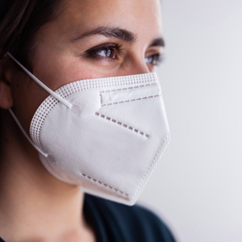

Masques de protection : les normalisateurs multiplient les initiatives face au coronavirus
Après la mise en accès libre des normes européennes recommandées pour fabriquer les masques de protection respiratoire, AFNOR prend l’initiative pour faciliter la production rapide de « masques barrières » permettant aux personnes saines de se protéger du coronavirus, en plus des indispensables gestes barrières.
Face à la crise sans précédent créée par l’épidémie de coronavirus, le CEN, le Comité européen de normalisation, et le CENELEC, le Comité européen de normalisation électrotechnique, rendent accessible gratuitement une série de normes européennes portant sur les dispositifs médicaux et les équipements de protection individuelle. Les 11 normes concernées, élaborées par des experts européens, couvrent les différents masques, les gants médicaux et les vêtements de protection. Elles sont désormais librement téléchargeables sur le site d’AFNOR Editions.
NF EN 14683 pour les masques chirurgicaux
Un masque chirurgical est un dispositif médical. Elaboré selon la norme NF EN 14683, il est destiné à éviter la projection vers l’entourage des gouttelettes émises par celui qui porte le masque. Il protège également celui qui le porte contre les projections de gouttelettes émises par une personne en vis-à-vis. En revanche, selon les circonstances, il ne protège pas contre l’inhalation de très petites particules en suspension dans l’air et potentiellement porteuses de virus.
On distingue trois types de masques chirurgicaux :
- Type I : efficacité de filtration bactérienne > 95 %.
- Type II : efficacité de filtration bactérienne > 98 %.
- Type IIR : efficacité de filtration bactérienne > 98 % et résistant aux éclaboussures.
NF EN 149 pour les masques FFP

Un masque FFP (pour « Filtering Facepiece Particles ») est un masque de protection respiratoire individuel. Conçu selon la norme NF EN 149, il est destiné à protéger celui qui le porte à la fois contre l’inhalation de gouttelettes et contre les particules en suspension dans l’air. Le port de ce type de masque est plus contraignant (inconfort thermique, résistance respiratoire) que celui d’un masque chirurgical mais protège de l’inhalation d’agents infectieux.
En forme de coque, 2 plis, 3 plis, becs de canard, avec ou sans soupape expiratoire et muni ou non d’un joint facial, il existe trois catégories, selon leur efficacité :
- Les masques FFP1 filtrant au moins 80 % des aérosols (fuite totale vers l’intérieur < 22 %).
- Les masques FFP2 filtrant au moins 94 % des aérosols (fuite totale vers l’intérieur< 8 %).
- Les masques FFP3 filtrant au moins 99 % des aérosols (fuite totale vers l’intérieur < 2).